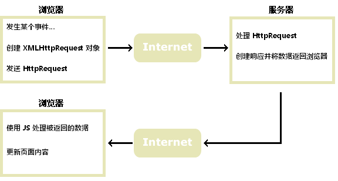

AJAX 简介
AJAX 旨在不重载整个页面的情况下对网页的某些部分进行更新。
AJAX 是什么？
AJAX = Asynchronous JavaScript and XML（异步 JavaScript 和 XML）。
AJAX 是一种创建快速动态网页的技术。
通过在后台与服务器交换少量数据，AJAX 允许网页进行异步更新。这意味着，在不重新加载整个网页的情况下，对网页某些部分进行更新。
典型的网页（不使用 AJAX），如果内容发生变化，就必须重载整个页面。
使用 AJAX 的典型案例包括：谷歌地图、腾讯微博、优酷视频等等。
AJAX 如何工作

AJAX 基于因特网标准
AJAX 基于因特网标准，并使用以下技术组合：
- XMLHttpRequest 对象（与服务器异步交互数据）
- JavaScript/DOM （显示/取回信息）
- CSS （设置数据的样式）
- XML （常用作数据传输的格式）
提示：AJAX 应用程序是独立于浏览器和平台的！
谷歌搜索建议（Google Suggest）
随着谷歌搜索建议功能在 2005 的发布，AJAX 开始流行起来。
谷歌搜索建议使用 AJAX 创造出动态性极强的 web 界面：当您在谷歌的搜索框中键入内容时，JavaScript 会把字符发送到服务器，服务器则会返回建议列表。
今天就开始使用 AJAX
在我们的 ASP 教程中，我们将演示 AJAX 如何更新网页的某个部分，在不重载整个页面的情况下。我们将使用 ASP 来编写服务器端的脚步。
如果您希望学习更多有关 AJAX 的知识，请访问我们的 AJAX 教程。